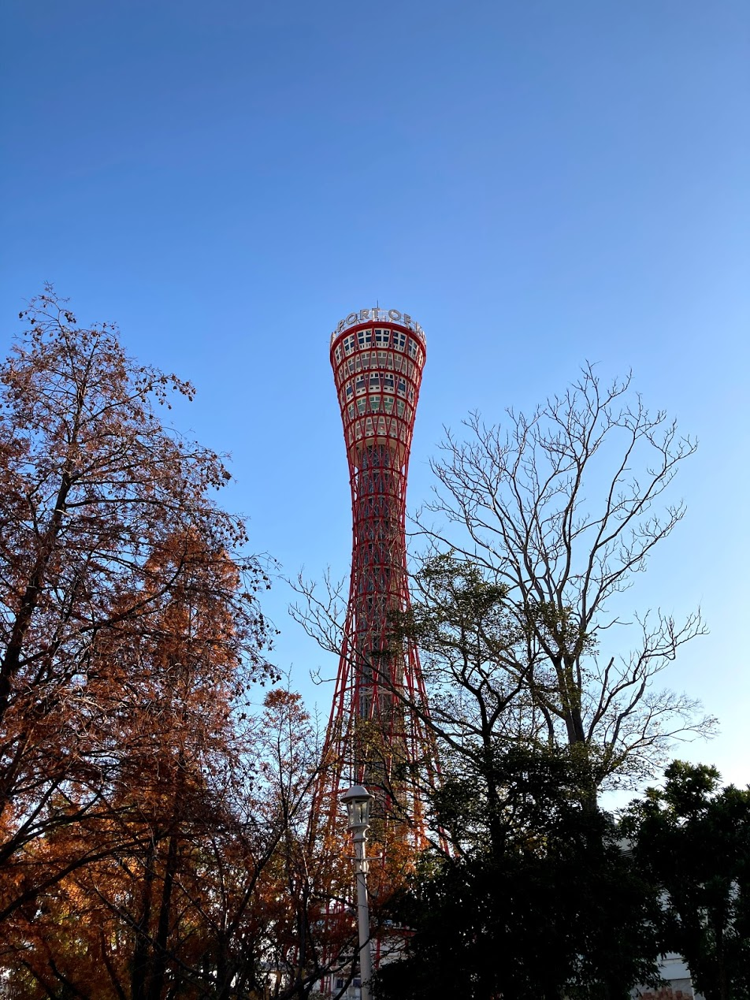
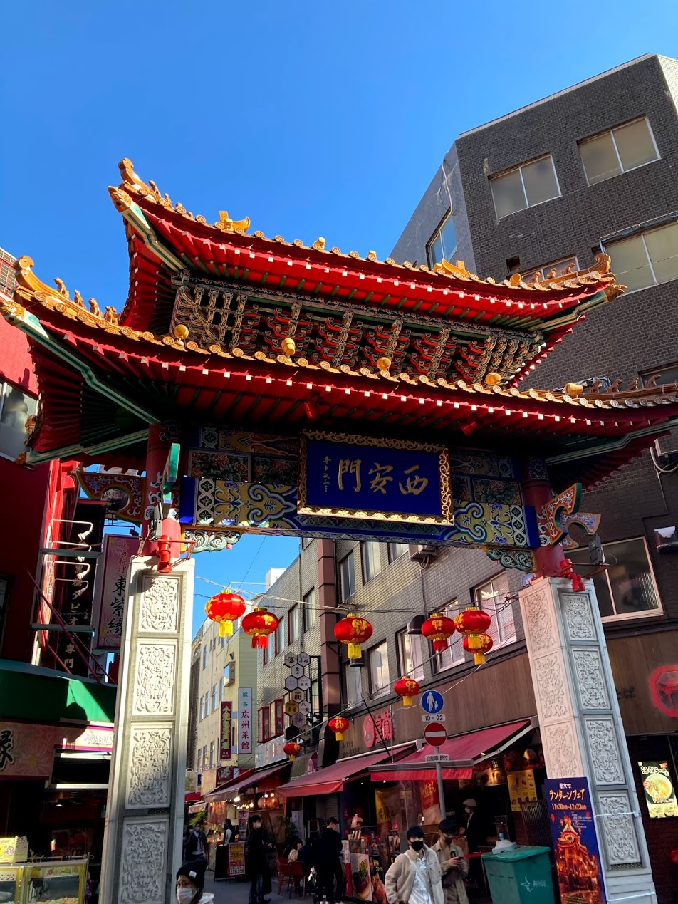

神戸散歩
～神戸市街地編～
12/5 2020
カテゴリー：サークル長の自主練
 メリケンパーク
メリケンパーク
昨今の新型コロナウイルス感染症により、依然として本サークルは活動は制限されていますので、個人的に散歩をしてきました。その時巡ったところや名所をご紹介できればなと思います。
上の写真にもご紹介している通り、こちら神戸の定番スポット”メリケンパーク”です。こちらはかの有名な
神戸大生YouTuber「パーカー」さん（海事科学部・２回生）も紹介している場所です。
流石有名スポットということや週末ということもあり、多くの方が訪れていました。ここのスターバックスはいつも混んでおり、私も店内でフラペチーノを楽しむよりかは芝生でのんびりとリラックスした方がいいかなと思いまして、モバイルオーダーでテイクアウトしました（笑）天気も気持ちよかったので最高ですね。
神戸ポートタワー実はこの近くに『神戸ポートタワー』もあるんですよ！高さはそんなに高くはない（高さ：108ｍ）のですが、素敵な建造物です。
さて、港を後にして次に私が向かったのは”南京町”です。関東の人たちにはあまりピンとこない方も多いのでしょうか？横浜にある中華街の神戸版と思っていただければいいのではないでしょうか？
南京町・西安門
メリケンパークからもそんなに遠くない位置にあるため、一日で回りきれる距離です。南京町は横浜の元町・中華街と同様に食べ歩きが醍醐味です！

来年度こそはみんな揃って散歩していきたいすね～♪ では皆さんお体にお気をつけてよいお年をお過ごしくださいませ～